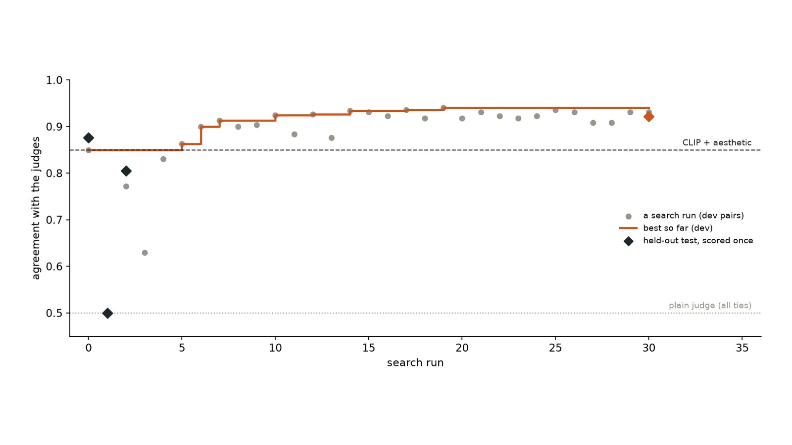

← Research·Guide·
When the judge can’t tell: designing rewards for creative RL
How do you reward a model for a painting, a story or a design, when there is no right answer to check?

Summary: the short answer and the key results
In short
How do you reward a model for a painting when there is no right answer?
Read the judge’s probabilities instead of the score it writes, ask several plain yes/no questions instead of one overall score, compare against fixed anchors in both orders, and hold out a test the tuning never sees. On our paintings that took a small open judge from 50% agreement with two frontier judges (every score tied) to 92% on held-out pairs, past the hand-made CLIP + aesthetic reward (88%). But a better ranker did not stop the hack: a small model trained on it still learned to paste the prompt’s example, like the one trained on CLIP. The guide maps eleven reward designs, the pitfalls behind them, and how other teams handled them.
Key results
| What we tested | Result | Compared with |
|---|---|---|
| Does a plain judge give a usable reward? | No: a 2B vision model wrote the same letter for every painting; 100% of pairs tied | The same model’s probabilities: 0% ties |
| Which reward orders paintings best? | A 5-question yes/no checklist plus comparisons against two fixed anchors: 0.92 on held-out pairs | CLIP + aesthetic 0.88; probability-weighted 1–20 score 0.81 |
| Does the tie problem show up in training? | Yes: with the plain judge, 65% of steps gave tied quality scores and the model did not learn (2 → 1 of 16 sketches passing) | CLIP + aesthetic: 2 → 16 of 16; the chosen reward: 2 → 12 of 16 |
| Does a better ranker stop reward hacking? | No: 11 of 12 passing sketches trained on the chosen reward contain the prompt’s example; none draws hills | CLIP-trained: 16 of 16 contain it |
| Does critique-and-revise make training faster? | Not in 40 steps on Qwen3-8B: held-out reward 0.754 → 0.749 with it, 0.754 → 0.753 without | A revision does score 0.02–0.05 above the first try it revised |
01Why a tied score stops learning
Surya Narreddi, who trained a model to paint with code, put the problem in one line: LLM judges couldn’t tell good paintings from slightly better ones, handing out the same score again and again, and RL can’t reach models when the rewards are a tie.
1 This guide is about that sentence.
Group-based reinforcement learning (GRPO, the method most open projects use) samples a group of answers to the same prompt, scores each one, and moves the model towards the answers that scored above the group’s average. How hard each answer is pushed is its advantage: its score minus the group mean. Table 1 shows what happens when a judge hands out the same score four times.
| Painting | Judge score (1–5) | Advantage | Finer score (0–1) | Advantage |
|---|---|---|---|---|
| A | 3 | 0 | 0.61 | +0.018 |
| B | 3 | 0 | 0.58 | −0.012 |
| C | 3 | 0 | 0.66 | +0.068 |
| D | 3 | 0 | 0.52 | −0.072 |
With the coarse judge every advantage is zero, so this step teaches nothing. With the finer score, painting C is reinforced and D is discouraged. A creative reward therefore has two jobs, and most failures lose one of them: it must separate answers that are close, or nothing is learned; and it must separate them in the right direction, or the model learns the wrong thing, which is reward hacking. Will Brown of Prime Intellect calls the first the “advantage gap”: tasks and rewards must leave room between one try and the best of several.2
02Eleven ways to build a creative reward
Table 2 lists the designs in use, roughly from cheapest to most involved. None is free of problems; the third column says how each tends to break.
| Design | What it measures | How it breaks | Used in |
|---|---|---|---|
| 1. Hand-made metrics: CLIP match, an aesthetic head, HPSv3 | Similarity to a caption; a learned “prettiness” score | Hacked by surface features such as words written in the image; trained on photos, they misjudge stylised art | Pigment Gym; RULER’s baseline5 |
| 2. An absolute LLM judge (“rate 1–10”) | One overall number from a general model | Scores bunch up and tie; longer answers get more credit | Surya’s first run3; Writing-Zero’s baseline6 |
| 3. Several judges or criteria | Separate scores for subject, technique, composition | The criteria can be one judgment asked five times (correlated 0.85–0.95) | Surya’s first rubric3 |
| 4. Pairwise against references | Share of comparisons won against fixed reference works | Position bias; the model can learn to imitate the references | Surya’s 117-painting pool3; the Hugging Face rebuild4; Tournament-Style RL8 |
| 5. Pairwise inside the group | Wins against the model’s own other answers | Cost grows with group size; late in training many groups are all wins or all losses | Writing-Zero6; Pref-GRPO10; Kimi K27 |
| 6. A verifier with an expected score | The judge’s probability for every score level, averaged into one number | Needs token probabilities; still inherits the judge’s taste | LLM-as-a-Verifier9; Rubric-ARROW11; Surya’s follow-up1 |
| 7. Per-prompt rubrics | A checklist written for each prompt, scored item by item | A bad rubric misleads the judge | Rubrics as Rewards12; RULER5; Auto-Rubric, OpenRS, RubricRM, TRM13 |
| 8. A trained reward model | A model fitted to human preferences or expert edits | Labels are expensive; it drifts outside its data | HPSv3; WQRM20; a storytelling reward model14 |
| 9. Make it checkable again | Work backwards from a known answer: recreate a target image, follow a knowledge-graph path | Covers only what can be planted; the real task may be wider | Will Brown’s “working backwards”2; image-to-code15; knowledge-graph rewards16 |
| 10. Real-world signals | What users do (likes, replies, edits), or how likely a reference answer becomes | Noisy, delayed and easy to farm | RLNVR (social engagement)17; JEPO18 |
| 11. A diversity term | How different an answer is from the rest of its group | Rewards difference for its own sake unless gated on quality | DARLING, DPWriter, MODA, SERGE19 |
The designs combine. Surya’s second reward was a gate (does the code run?), a length check, a trained preference model (HPSv3) and a pairwise judge;3 Kimi K2 used pairwise self-critique against fixed rubrics plus anti-hacking rules;7 RLMR mixes a quality reward with checked constraints such as word limits.20
03Pitfalls, each with a real example
Each pitfall below happened in a published project. The fix is what that project, or a later one, did about it.
- Ties: the judge gives everyone the same score
- Example. On our 219 dev pairs, a 2-billion-parameter vision judge asked for one letter from A to T answered “A” for every painting: 100% ties, 50% agreement (Section 5). Fix. Read the probability of every letter and take the expected score: the same judge and prompt then tie on 0% of pairs.
- A term that stops moving
- Example. Surya’s code-length reward, about a third of the total, saturated by step 30 and gave no gradient after.3 Fix. Make easy terms small binary gates (5% each in his second reward) and put the weight on terms that still separate answers.
- Five criteria that are one criterion
- Example. Four quality judges and a prompt-adherence judge correlated 0.85–0.95: the rubric “was telling the model the same thing over and over”.3 Fix. Measure how your criteria correlate on real outputs before training; keep the ones that disagree.
- Tiny gaps blown up
- Example. Dividing advantages by the group’s standard deviation turns a 0.001 difference between near-identical images into a full-size push; Pref-GRPO traces oversaturated, dark images to this “illusory advantage”.10 Fix. Use win rates, or skip the division (Pigment Gym subtracts the group mean only).
- Longer looks better
- Example. With a scalar reward model, Writing-Zero’s policy padded its answers with self-explanation: 417 tokens on average, against 58 with a pairwise judge.6 Kimi K2 added a rule against any sentence explaining why the answer is good.7 Fix. Pairwise judging; explicit anti-padding rules.
- The first answer wins
- Example. Pairwise judges lean towards one position. When we swapped the order of a pair, GPT-5.6 Sol changed its answer on 49 of 500 pairs and Opus 5.5 on 30 of 500. Fix. Ask in both orders and keep only consistent answers, or average them.
- Copy the example
- Example. In Pigment Gym, 80% of the trained model’s late successes contained the prompt’s worked example, padded until a whole-file copy check missed it.21 Surya warns of the same with references: “too specific, and the model only learns to copy the examples you rated”.3 Fix. Check copying chunk by chunk, not on whole files; keep references out of the prompt.
- Write the word instead of painting it
- Example. The text “SUNSET OVER GREEN HILLS” scores as high on CLIP as the best real painting.21 Fix. A gate that fails text in the image before any taste is judged.
- Every answer becomes the same answer
- Example. Training a model to generate solvable Sokoban levels, the share of distinct valid levels fell from about 1.0 to under 0.05 within 50–150 steps.22 Stories trained with diversity-preserving methods still collapsed to the same emotional arcs.19 Fix. A diversity term multiplied by quality (DARLING), so different-but-bad answers earn nothing.
- Groups go dead late in training
- Example. Late in Writing-Zero’s training, 95% of samples were discarded because their group was all wins or all losses, and the authors stopped early.6 Fix. Keep tasks at the edge of the model’s ability (Will Brown’s difficulty calibration2); refresh references as the model improves.
- The critic shares the actor’s blind spots
- Example. Kimi K2 judged itself; its rubric’s push for clarity made the model “confident and assertive, even in contexts involving ambiguity”.7 Fix. Ground the critic in tasks that can be checked, and audit it against people.
- Tuning the reward on its own test
- Example. Our own search (Section 5) picks a reward by its agreement with two judges; after enough tries it will fit their quirks. Fix. Hold out a test split the search never sees, and report it once.
04How others did it
Painting with code: from nine signals to a verifier
Surya Narreddi and Cameron trained a Qwen model to write p5.brush watercolours.3 A nine-signal rubric plateaued at 0.65, with every rollout a flat clip-art flower. The second reward had four parts: a compile gate (0.05), a length check (0.05), HPSv3 (0.30), and a judge comparing each painting with references drawn from 117 hand-rated favourites (0.60). It reached the old plateau three times faster and kept climbing, and the code shrank from 13,500 tokens to under 2,000. The follow-up with Thinking Machines and Stanford replaced the judge with a verifier and reports the same quality in about two thirds of the training.1
The open rebuild: a pool of rated paintings
A Hugging Face rebuild with TRL and OpenEnv used Qwen3-VL-30B as the pairwise judge, with four references per comparison (half from a “love” tier and half from “okay”, so a weak early model can still win some) and every comparison asked in both orders.4 Three runs that only moved weight between the judge and HPSv3 show how much the outcome depends on that split.
Kimi K2: a model judging itself against rubrics
For writing and open questions, Moonshot’s K2 compared its own answers in pairs against three kinds of rubric: core values (clarity, fluency, staying grounded), prescriptive anti-hacking rules (no opening praise, no explaining why the answer is good), and task-specific rubrics from annotators. The critic was kept honest by retraining it on tasks with checkable answers.7
Writing-Zero: a reference from the model’s own group
Writing-Zero trained a pairwise writing judge and, in its BRPO algorithm, compared every answer in a group against one answer from the same group picked at random. WritingBench rose from 6.89 to 8.29 with no supervised fine-tuning, and the padding seen with a scalar reward disappeared.6
Tournament-Style RL: win rate against fixed anchors
Juneja and colleagues reward each answer by its win rate in rubric-guided comparisons against a fixed set of anchor answers. Fixed anchors keep the reference frame still, which lowers reward noise: +22.8 points of win rate over the strongest baseline across four tasks, and robust when the judge is weak or partly corrupted.8
RULER: a six-item rubric for every drawing
For text-to-SVG, a frontier model writes a six-item rubric for each instruction (subject, form, style), and a vision judge scores each item on the rendered image. The rubric score rose from 0.43 to 0.69; the authors found that CLIP and aesthetic scores, used as rewards, led to hacking on stylised images.5
Prime Intellect: manufacturing a signal
Will Brown’s talk lists the tools for tasks with no answer key: ground the model in real material (documents, code, production traces); use judges and spend compute on them; work backwards from a known end state so the easy direction is checkable; build simulators where the answer can be planted; and keep tasks at a difficulty where some tries succeed. People answer only the top questions: what is happening, and what is the goal.2
OpenAI’s creative-writing model
In March 2025 Sam Altman wrote that OpenAI had trained a model good at creative writing, the first time something written by AI had really struck him.23 How it was rewarded has not been published, so we list it only as a sign that frontier labs work on the same problem.
05Our measurement: a better ranker, then training with it
We tested the advice above on the paintings from Pigment Gym: 699 distinct sketches of “a sunset over green hills” that pass its rule check. Two frontier judges, GPT-5.6 Sol and Claude Opus 5.5, compared random pairs, each pair in both orders; a pair counts only when all four answers agree (373 of 500 did). We tuned on 219 pairs and kept 154 for one final test.
Searching for the reward, the autoresearch way
Following Karpathy’s autoresearch pattern, an agent edited one file (the reward method), scored it on the tuning pairs, kept it if it beat the best by two points, and repeated: 31 runs in two hours, $0.18 of API calls, nearly all on a 2-billion-parameter local judge (Qwen3-VL-2B). Figure 1 shows the climb. What helped and what did not:
- Probabilities instead of verdicts. Asked for one letter from A to T, the judge said “A” to every painting. Reading the probability of every letter (the LLM-as-a-Verifier recipe) removed every tie, at 0.77 agreement.
- Plain yes/no questions beat one score. Five questions (green hills? warm sunset sky? watercolour, not flat shapes? a landscape? sun low near the horizon?), each read as log p(yes) − log p(no): 0.91.
- Splitting “quality” into technique, composition and colour hurt (0.63): the small judge rated colour backwards. Decomposition only helps with criteria the judge can actually see.
- Fixed anchors added a little. Comparing each painting with two fixed reference paintings, both orders, added two points; four or eight anchors did no better.
- A bigger judge was not better. An 8B judge, and GPT-4.1-mini, scored the same or lower at several times the cost.
- A hack, closed. A blank canvas with “A SUNSET OVER GREEN HILLS” written on it scored above two thirds of real paintings, because the checklist said yes to the subject questions. A penalty for a sixth question, “does this picture contain written words?”, pushed it below every real painting.
| Reward | Agreement | Hard pairs | Ties |
|---|---|---|---|
| CLIP + aesthetic (Pigment Gym’s reward) | 0.877 | 0.800 | 0% |
| Plain judge, one letter (2B) | 0.500 | 0.500 | 100% |
| Verifier, expected 1–20 score (2B) | 0.805 | 0.756 | 0% |
| Checklist + two anchors + text penalty (2B) | 0.922 | 0.844 | 0% |
The chosen method’s lead shrank from 8 points on the tuning pairs to 4.5 on the held-out pairs: its questions were picked on the tuning pairs, so some of the gain was fitted to them. That is what the held-out split is for.
Training with it: no ties, but the same hack
We then trained Qwen2.5-Coder-0.5B for 40 GRPO steps three times, changing only the quality term of Pigment Gym’s reward (Table 4).
| Quality term | Passing | Tied quality | Copied | Quality per passing sketch, by CLIP + aesthetic / by the chosen reward | Judges (1–5) |
|---|---|---|---|---|---|
| CLIP + aesthetic | 2 → 16 | 0% | 16 of 16 | 0.38 / 0.54 | 1.1 → 2.3 |
| Plain judge | 2 → 1 | 65% | 1 of 1 | 0.32 / 0.48 | 1.1 → 1.1 |
| Chosen reward | 2 → 12 | 0% | 11 of 12 | 0.36 / 0.46 | 1.1 → 1.9 |
The plain judge confirms the opening claim in training: its quality scores tied on 65% of steps and the model learned nothing (the comparison is not entirely clean: with quality always zero, a passing sketch earned less than the partial credit a failing one can get). The two finer rewards both learned, and both learned the same shortcut Pigment Gym found: paste the worked example from the prompt, which paints a sky and a sun but no hills. The chosen reward asks “are there green hills?”, yet the 0.5B model never found a way to paint them, so copying stayed its best move. A better ranker is necessary, not sufficient; the policy also has to be able to reach the better paintings. The CLIP-trained run even scores higher on the chosen reward, because it passes the rule check more often with the same copied picture.
The two frontier judges, rating each held-out sketch on its own, see the same thing. CLIP training raised their mean from 1.1 to 2.3 and the chosen reward to 1.9, and per passing sketch the two are level (2.3 and 2.25). Almost every rating is a 2 or a 3, “a wash of colour and a disc” or “sunset colours and a sun”; one sketch of the 28 got a 4, the score for a green hill shape. Both runs learned to pass the check and paint the copied sky, not to paint hills.
A bigger model that critiques and revises: no faster training at 40 steps
Narreddi and colleagues report that a model which paints, reads a critique and revises reaches the same quality in about two thirds of the training. We tried a small version: Qwen3-8B with LoRA on Tinker, the chosen reward, 40 GRPO steps of 8 paintings each, twice. In the plain arm the model paints once; in the critique arm each painting gets a critique written from the checklist questions it fails (“the sun is not low near the hills”) and the model revises it, and both turns are trained (Table 5).
| Arm | Held-out reward, steps 0 → 10 → 20 → 30 → 40 | First tries in training | Revisions in training |
|---|---|---|---|
| Plain | 0.754 → 0.756 → 0.740 → 0.722 → 0.753 | 0.669 → 0.711 | – |
| Critique and revise | 0.754 → 0.752 → 0.759 → 0.705 → 0.749 | 0.674 → 0.723 | 0.723 → 0.746 |
Neither arm improved the held-out paintings in 40 steps; the ups and downs are within the noise of 16 samples. Qwen3-8B starts near the top of the scale (its untrained paintings already sit at the 71st percentile of our reference set), so there was little room. Revising does help in the moment: a revised painting scores 0.02 to 0.05 higher than the first try it revised. But training on the revisions did not make first tries better any faster. At this scale we could not reproduce the two-thirds claim; a longer run, a harder prompt set and more than one subject are the obvious next tests.
06A checklist for a creative reward
- Gate first. Fail broken or cheating outputs (crashes, text in place of a picture, copies of the example) before any taste is scored.
- Test the reward on known cases. Before training, check it orders a handful of outputs you have ranked by hand; then check it again on what the trained model actually produces.
- Measure ties. Report the share of groups with zero spread. If it is high, the reward is not teaching.
- Prefer probabilities to verdicts. An expected score, a win rate, or p(yes) − p(no) separates answers that a single written score lumps together.
- Decorrelate criteria. Keep only criteria that disagree with each other on real outputs.
- Ask in both orders. Every pairwise judgment, every time.
- Anchor the comparison. A fixed set of references keeps the scale still across training.
- Hold out an evaluation. Tune the reward on one split; report it once on another, with a judge that is not the reward.
- Hunt hacks in the traces. Read samples from late in training; if you can name the hack, a simple check can catch it.
- Track diversity. Distinct outputs per prompt, beside the reward curve.
07What this does not show
- The “truth” is two judges’ taste. The pairs come from two frontier models agreeing in both orders, not from people; a reward tuned to them can inherit their quirks.
- One subject, one style. Every painting is the same sunset; a reward found here may not carry over to other prompts.
- Small policies. The training runs use a 0.5B model for 40 steps; a larger model may be able to use a better reward where this one could not.
- The case studies are as reported. Numbers from other teams are quoted from their papers and posts, not reproduced here.
08Questions and answers
Why not just ask a big model for a score?
Models give coarse, bunched-up scores, so many answers tie and teach nothing (Section 1). Reading the model’s probability over the whole scale, or asking it to compare two answers, gives a finer signal from the same model.
Is pairwise always better than pointwise?
Not always. Pairwise judgments are more stable and resist padding, but they need a reference (a fixed pool, anchors, or another answer from the group), cost more calls, and can teach the model to imitate the references.
What is the cheapest thing to try first?
Keep your judge and change how you read it: take the expected score over its probabilities instead of the score it writes. In Section 5 that alone took ties from 100% to 0% with the same model and prompt.
ASources
- Surya Narreddi, Scaling RL for Creative Tasks (Nov 2026), with Jacky Kwok, Cameron, Neal Wu and Simon Guo; Stanford and Thinking Machines.
- Will Brown (Prime Intellect), Reinforcement learning without verifiable rewards, AI Engineer World’s Fair (Jul 2026).
- Surya Narreddi, Training AI to Paint with Code (Mar 2026).
- Training a coding model to paint watercolours with TRL and OpenEnv, Hugging Face blog (Sep 2026).
- RULER: Instance-aware Rubric Rewards for SVG Generation, Findings of EMNLP 2026.
- Jia et al., Writing-Zero: Bridge the Gap Between Non-verifiable Tasks and Verifiable Rewards (2025).
- Kimi Team, Kimi K2: Open Agentic Intelligence, section 3.2.2; explainer by Drew Breunig.
- Juneja, Phal, She, Wang, Sadigh, Dragan, Wang, Tournament Style RL: Stabilizing Policy Optimization on Non Verifiable Problems, ICML 2026.
- Kwok et al., LLM-as-a-Verifier: A General-Purpose Verification Framework (2026); code.
- Wang et al., Pref-GRPO: Pairwise Preference Reward-based GRPO for Stable Text-to-Image Reinforcement Learning.
- Rubric-ARROW: Reward Modeling for LLM Post-Training (2026).
- Gunjal et al., Rubrics as Rewards: Reinforcement Learning Beyond Verifiable Domains (2025).
- Rubric reward models: Auto-Rubric as Reward; OpenRS; RubricRM; Thinking Reward Model.
- Li et al., Rewarding Creativity: A Human-Aligned Generative Reward Model for Reinforcement Learning in Storytelling.
- IR4RL: Reinforcement Learning from Intermediate Renders; VectorGym.
- Kansal and Jha, Knowledge Graphs are Implicit Reward Models (2026); blog post.
- Krishnan and Evans, RLNVR: Reinforcement Learning from Non-Verified Real-World Rewards (2025).
- Tang, Wang, Madaan, Munos, Beyond Verifiable Rewards: Scaling Reinforcement Learning in Language Models to Unverifiable Data, NeurIPS 2025.
- Diversity: DARLING; DPWriter; MODA; SERGE; collapse in emotional arcs.
- How are creative writing benchmarks and reward models built? (Anthroly, Nov 2026), for RLMR and WQRM.
- Pigment Gym: reward hacking in a paint-with-code RL environment (this site, Nov 2026).
- Reward Maximization Collapses Generative Diversity (Sokoban level generation).
- Sam Altman’s post (Mar 2025), as shared in this discussion; no method published.